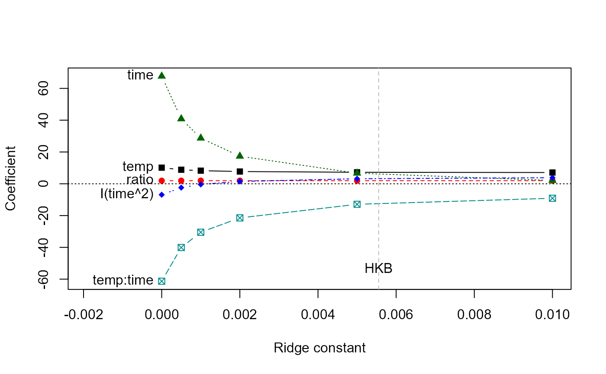
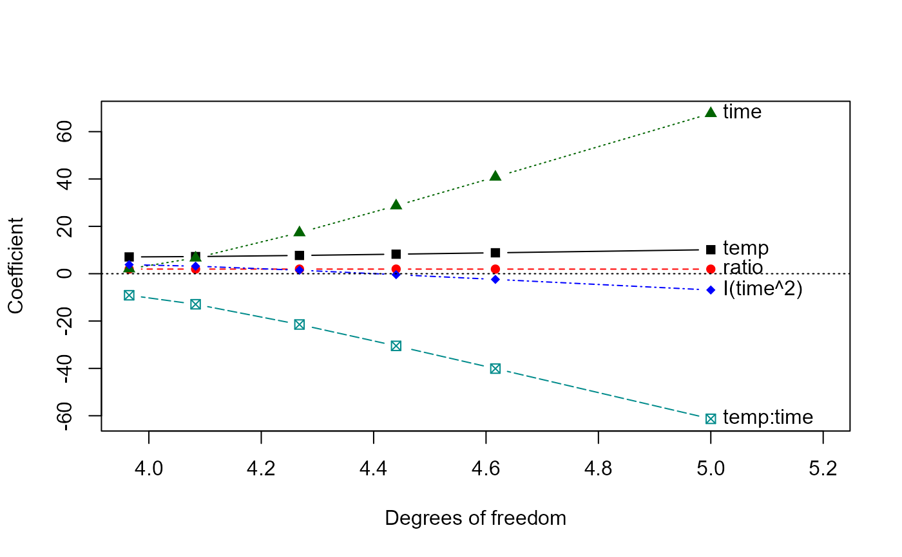
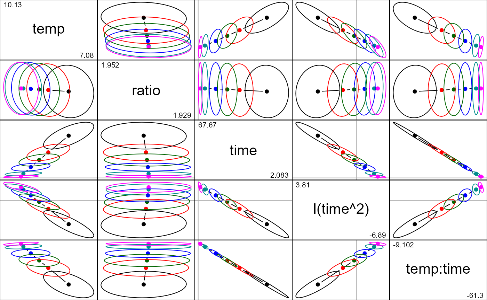

The data consist of measures of yield of a chemical manufacturing
process for acetylene in relation to numeric parameters.
Format
A data frame with 16 observations on the following 4 variables.
yield: conversion percentage yield of acetylenetemp: reactor temperature (celsius)ratio: H2 to N-heptone ratiotime: contact time (sec)
Details
Marquardt and Snee (1975) used these data to illustrate ridge regression in a model containing quadratic and interaction terms, particularly the need to center and standardize variables appearing in high-order terms.
Typical models for these data include the interaction of temp:ratio,
and a squared term in temp
References
Marquardt, D.W., and Snee, R.D. (1975), "Ridge Regression in Practice," The American Statistician, 29, 3-20.
Marquardt, D.W. (1980), "A Critique of Some Ridge Regression Methods: Comment," Journal of the American Statistical Association, Vol. 75, No. 369 (Mar., 1980), pp. 87-91
Examples
data(Acetylene)
# naive model, not using centering
amod0 <- lm(yield ~ temp + ratio + time + I(time^2) + temp:time, data=Acetylene)
y <- Acetylene[,"yield"]
X0 <- model.matrix(amod0)[,-1]
lambda <- c(0, 0.0005, 0.001, 0.002, 0.005, 0.01)
aridge0 <- ridge(y, X0, lambda=lambda)
traceplot(aridge0)

traceplot(aridge0, X="df")

pairs(aridge0, radius=0.2)
